DOWN2EARTH Team
Cardiff University (CU)

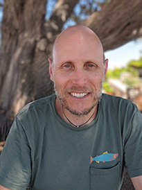
Michael Bliss Singer, DOWN2EARTH Principal Investigator and CU Principal Investigator

Toby Pitts, DOWN2EARTH Project Manager

Mark Cuthbert, Model Development Team

Owen Jones, Model Development Team

David MacLeod, Climate/Water Data Team

Andrés Quichimbo, Postdoctoral Researcher, Model Development Team
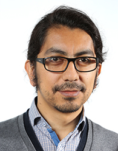
Manuel Rios Gaona, Postdoctoral Researcher, Model Development Team

Katherine Cocking, PhD Student, Climate/Water Data Team
University of Bristol (UoB)


Katerina Michaelides, UoB Principal Investigator, Climate/Water Data Team

Rafael Rosolem, Climate/Water Data Team

Dann Mitchell, Climate/Water Data Team

Dagmawi Asfaw, Postdoctoral Researcher, Climate/Water Data Team

Isaac Kipkemoi, PhD Student, Climate/Water Data Team
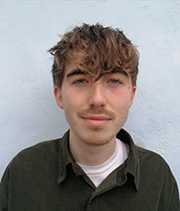
George Blake, PhD Student, Climate/Water Data Team
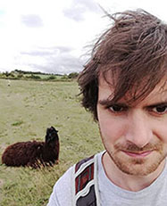
Jacob Rigby, Postdoctoral Researcher, App Development Team

Kieren Pitts, App Development Team

Chris Preist, App Development Team
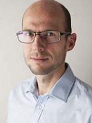
Dan Schien, App Development Team
Vrije Universiteit Amsterdam - Institute for Environmental Studies (IVM-VU)

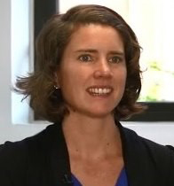
Anne van Loon, IVM-VU Principal Investigator, Model Development Team

Jeroen Aerts, Model Development Team
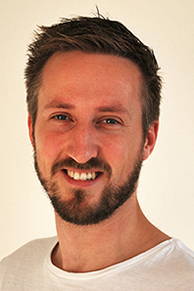
Toon Haer, Model Development Team

Ileen Streefkerk, PhD Student, Model Development Team

Teun Schrieks, PhD Student, Model Development Team
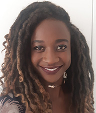
Rhoda Odongo, PhD Student, Model Development Team

Tim Busker, PhD Student, Model Development Team
Unviversity of Ghent (UGent)


Diego Miralles, UGent Principal Investigator, Climate/Water Data Team
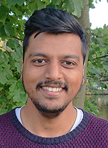
Akash Koppa, Postdoctoral Researcher, Climate/Water Data Team
Jessica Keune, Postdoctoral Researcher, Climate/Water Data Team

Jeroen Claessen, PhD Student, Climate/Water Data Team
University of East Anglia (UEA)

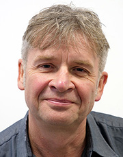
Roger Few, UEA Principal Investigator, Community Research, Engagement, & Impact Team
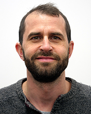
Mark Tebboth, Community Research, Engagement, and Impact Team
Aalborg University (Aalborg-PLAN)


Maike Schumacher, Aalborg-PLAN Principal Investigator, Climate/Water Data Team
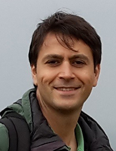
Ehsan Forootan, Climate/Water Data Team
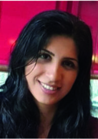
Nooshin Mehrnegar, Postdoctoral Researcher, Climate/Water Data Team
IGAD Climate Prediction and Applications Centre (ICPAC)

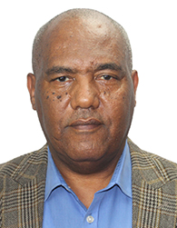
Abebe Tadege, ICPAC Principal Investigator, Dissemination and Communication Team

George Otieno, Dissemination and Communication Team
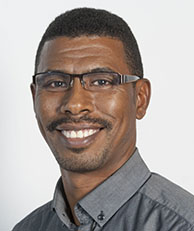
Khalid Hassaballah, Climate/Water Data Team
Action Aid International (AA)


Zahra Hdidou, AA Principal Investigator, Community Research, Engagement, and Impact Team
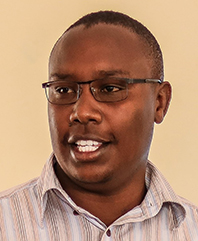
Hosea Kandagor, Community Research, Engagement, and Impact Team

Hashi Hassan, Community Research, Engagement, and Impact Team
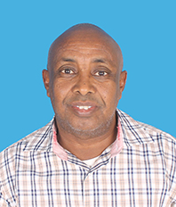
Ahmed Aden, Community Research, Engagement, and Impact Team

Cynthia Asafi Wechabe, Community Research, Engagement, and Impact Team
UN Food and Agriculture Organization - Somalia Water And Land Information Management (FAO-SWALIM)


Paolo Paron, FAO-SWALIM Principal Investigator, Climate/Water Data Team

Flavian Muthusi, Climate/Water Data Team
Climate Analytics (CA)

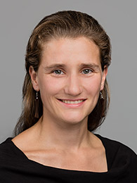
Inga Menke, CA Principal Investigator, Policy Development Team

Winnie Khaemba, Policy Development Team
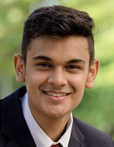
Raghuveer Vyas, Policy Development Team
BBC Media Action (BBC-MA)


Lynn Morris, BBC-MA Principal Investigator, Dissemination and Communication Team

Diana Njeru, Dissemination and Communication Team
Transparency Solutions (TS)

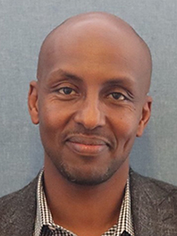
Latif Ismail, TS Principal Investigator, Policy Development Team

Mustafe Elmi, TS Principal Investigator, Policy Development Team
University of Nairobi (UoN)

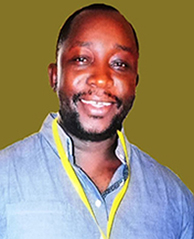
Oliver Wasonga, UoN Principal Investigator, Community Research, Engagement, and Impact Team
Addis Ababa University (AAU)


Mohammed Assen, AAU Principal Investigator, Community Research, Engagement, and Impact Team
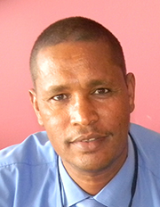
Asmamaw Legass, Community Research, Engagement, and Impact Team
Organization for Social Science Research in Eastern and Southern Africa (OSSREA)

Mohammed Assen, OSSREA Principal Investigator, Community Research, Engagement, and Impact Team
Asmamaw Legass, Community Research, Engagement, and Impact Team
DOWN2EARTH Alumni
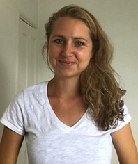
Sophie Rigg, AA Principal Investigator, Community Research, Engagement, and Impact Team

Peris Muchiri, Former FAO-SWALIM Principal Investigator, Climate/Water Data Team
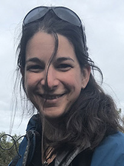
Ali Cotton, Former DOWN2EARTH Project Manager
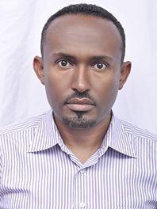
Tsegaw Lencha, Former member of Community Research, Engagement, and Impact Team
Amiera Sawas, Former AA Principal Investigator, Community Research, Engagement, and Impact Team

An EU Horizon 2020 Project funded under grant agreement No 869550